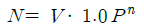
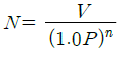
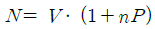
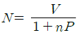
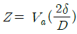
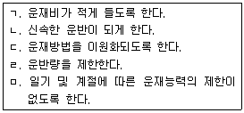
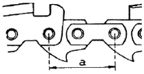

산림산업기사 (2012-08-26 기출문제)
1과목: 조림학
1. 다음 중 묘목을 밀식할 경우는?
- 음수보다는 양수
- 생장이 빠른 수종
- 병해충 피해에 약한 수종
- 비옥한 임지
(정답률: 65%)

2. 다음 중 중림작업법의 장점이 아닌 것은?
- 임지의 노출 방지
- 조림비용의 절감
- 하목의 맹아발새 성장 억제
- 잔족목 피해의 절감
(정답률: 80%)
3. 왜림작업 갱신법으로 적합하지 않은 수종은?
- 참나무류
- 아까시나무
- 밤나무류
- 오리나무류
(정답률: 39%)
4. 연륜에 대한 설명으로 틀린 것은?
- 춘재(조재)와 추재(만재)로 구성되어 있다.
- 춘재(조재)는 세포의 지름이 크고 세포벽이 얇다.
- 1년에 대개 1개의 테를 만들기 때문에 나이테라 부른다.
- 열대지방의 수목도 연륜이 있는 것이 일반적이다.
(정답률: 74%)
5. 법에서 정한 “산림기술자”에 포함되지 않는 것은?
- 나무병원 의사
- 산림공학 기술자
- 산림경영 기술자
- 목구조 기술자
(정답률: 59%)
6. 비료목이 고정하는 양료는?
- 질소
- 인산
- 가리
- 칼슘
(정답률: 91%)
7. 동령림에 관한 설명 중 옳지 않은 것은?
- 일반적으로 크기가 비슷한 나무를 단위면적당 더 많이 생산할 수 있다.
- 이령림보다 지력보호상 유리하다.
- 생장률이 비슷해서 균일한 목재가 생산된다.
- 병충해, 바람 등 재해에 대한 저항력이 이령림보다 강하다.
(정답률: 84%)
8. 토양층위 중에서 암색을 띤 층으로 비교적 다량의 유기물질이 광물질에 섞여져 있는 층위는?
- AF
- AH
- A1
- A2
(정답률: 59%)
9. 다음 수종 중 양수는?
- 주목, 비자나무
- 소나무, 사시나무류
- 솔송나무, 편백
- 가문비나무류, 전나무
(정답률: 85%)
10. 다음 중 비콩과수목으로서 질소고정균와 공생하는 비료목인 수종은?
- 족제비싸리
- 오리나무
- 아까시나무
- 굴참나무
(정답률: 67%)
11. 간벌작업의 목적과 거리가 먼 것은?
- 직경성장을 촉진하여 연륜폭이 넓어진다.
- 우량개체를 남겨서 임분의 유전적 형질을 향상시킨다.
- 조기에 간벌수확을 얻을 수 있으나, 산불의 위험성은 증대된다.
- 임목을 건전하게 발육시켜 여러 가지 해에 대한 저항력을 높인다.
(정답률: 83%)
12. 다음 중 밑깎기(풀베기)의 시기로 가장 적합한 때는?
- 3월∼5월
- 6월∼8월
- 9월∼11월
- 12월∼익년 2월
(정답률: 94%)
13. 다음 중 발아율을 나타내는 식은?
- (발아한 종자의 수 ÷ 시험한 종자의 수) × 100
- (시험한 종자의 수 ÷ 발아한 종자의 수) × 100
- (발아한 종자의 수 - 시험한 종자의 수) × 100
- (시험한 종자의 수 - 발아한 종자의 수) × 100
(정답률: 80%)
14. 종자를 정선한 후 곧 노천매장을 해야 좋은 수종들은?
- 소나무, 해송, 낙엽송, 가문비나무
- 편백, 삼나무, 층층나무, 피나무
- 벽오동, 팽나무, 물푸레나무, 신나무
- 섬잣나무, 들메나무, 단풍나무류
(정답률: 58%)
15. 제주특별자치도의 한라산에 자라는 구상나무는 다음 중 어느 나무와 분류학적으로 가장 가까운 나무인가?
- 잣나무
- 분비나무
- 주목
- 가문비나무
(정답률: 56%)
16. 생가지치기 작업을 피하는 것이 좋은 수종은?
- 소나무
- 전나무
- 낙엽송
- 벚나무
(정답률: 80%)
17. 다음 중 접목의 방법이 아닌 것은?
- 절접
- 복접
- 할접
- 압조법
(정답률: 84%)
18. 다음 중 종자의 발아촉진방법으로 적합하지 않은 것은?
- 건사저장법
- 냉수침적법
- 열탕침적법
- 노천매장법
(정답률: 78%)
19. 엽분석으로 무기영양상태를 진단할 때 잎의 채취 시기로 가장 적합한 때는?
- 5월∼6월
- 7월∼8월
- 10월∼11월
- 3월∼4월
(정답률: 64%)
20. 묘포의 설계 및 조성에 대한 설명 중 틀린 것은?
- 주도로는 경운기나 손수레 등이 이동할 수 있도록 1∼2m 안팎의 폭을 유지한다.
- 묘포의 구획에는 기계장비의 도입, 방풍림, 저수지등을 고려한다.
- 필요한 묘포 면적을 산출할 때는 수종, 묘목 규격, 생산량, 휴경지 면적 등을 고려한다.
- 예산, 노동력 관리, 시설장비 운영, 자재 확보, 묘목 생산 등을 고려하여 관리계획을 수립한다.
(정답률: 59%)
2과목: 산림보호학
21. 수병의 외과적 요법을 설명한 것이다. 옳지 않은 것은?
- 수술방법은 피해부위에 따라 다르며 어떤 경우에도 병환부는 완전히 제거해야 한다.
- 가지를 잘라내었을 경우 석회황합제 등 소독제를 바른 다음 흰페인트 등으로 방수처리한다.
- 줄기의 일부분이 피해를 받았을 경우 피해부위를 포함한 건전부위까지를 깎아내고 크레오소오트타르 등을 바른다.
- 외과적 처리 시기는 생장이 멈춘 늦가을에 하는 것이 좋다.
(정답률: 73%)
22. 종실을 가해하는 해충이 아닌 것은?
- 밤바구미
- 도토리거위벌레
- 복숭아유리나방
- 솔알락명나방
(정답률: 56%)
23. 고라니에 대한 설명으로 틀린 것은?
- 제주특별자치도를 제외한 우리나라 전역에 서식한다.
- 일부일처제이다.
- 한 번에 2∼4마리의 새끼를 낳는다.
- 수렵기에는 수렵이 가능한 동물이다.
(정답률: 64%)
24. 4∼6월경 털녹병에 걸린 잣나무의 줄기에서 볼 수 있는 오렌지색의 포자는?
- 겨울포자
- 녹포자
- 여름포자
- 담자포자
(정답률: 68%)
25. 보통 식물기생 선충의 서식밀도가 가장 높은 곳은?
- 땅속 60∼80cm
- 지표바로 밑(땅속 10cm 이내)
- 기주식물의 뿌리 근처(땅속 15cm 정도)
- 식물체의 눈, 잎부위
(정답률: 59%)
26. 석회보르도액 조제시 사용을 금지하여야 하는 용기는?
- 나무통
- 철제통
- 질그릇통
- 플라스틱통
(정답률: 76%)
27. 다음은 살충제의 부작용을 열거한 것이다. 이들 중 부작용과 관계가 없는 것은?
- 해충의 천적이 급격히 증가할 수 있다.
- 저항성 해충의 출현이 증가할 수 있다.
- 약제 살포 후 경우에 따라 해충밀도가 급격히 증가 할 수 있다.
- 잔류독성에 의해 환경오염이 발생할 수 있다.
(정답률: 62%)
28. 산림해충 방제법 중 생물적 방제법이 아닌 것은?
- 기생벌 이용
- 잠복소 설치 유살
- 포식충 이용
- 병원미생물 이용
(정답률: 86%)
29. 녹병균류는 보통 5가지의 포자형을 갖고 있다. 다음 중 녹병균의 포자형이 아닌 것은?
- 담자포자
- 분생포자
- 녹포자
- 여름포자
(정답률: 70%)
30. 다음은 소나무시들음병(pine wilt disease)에 대한 설명이다. 옳지 않은 것은?
- 매개충은 솔수염하늘소(Monochamus alternata)이다.
- 소나무, 특히 적송과 흑송이 매우 감수성인 수종이다.
- 병에 감염되면 수령과 관계없이 침엽이 변색 하면서 나무가 말라 죽는다.
- 병에 대한 방제법으로는 살균제 및 살충제를 교대로 살포하는 것이다.
(정답률: 63%)
31. 야생동물의 서식지 구성요소로 맞는 것은?
- 먹이 - 연료 - 물 - 공간
- 먹이 - 물 - 임연부 - 공간
- 먹이 - cover -물 - 공간
- 먹이 - cover - 임연부 - 물
(정답률: 67%)
32. 다음 조류 중 번식기에 새끼의 배설물로 인하여 나무를 고사시키는 것은?
- 멧비둘기
- 가막딱다구리
- 까치
- 백로
(정답률: 83%)
33. 응애류를 방제하기 위한 농약은?
- 살비제
- 살서제
- 살충제
- 살균제
(정답률: 74%)
34. 흡즙성 해충이 아닌 것은?
- 느티나무벼룩바구미
- 버즘나무방패벌레
- 솔껍질깍지벌레
- 소나무좀
(정답률: 74%)
35. 온도변화에 따른 조직의 수축, 팽창 차이로 수목의 줄기가 갈라지는 현상은?
- 상해
- 상렬
- 상주
- 볕데기
(정답률: 82%)
36. 다음 중 유충과 성충기에 같은 기주식물을 가해하는 곤충은?
- 오리나무잎벌레
- 솔나방
- 솔입혹파리
- 매미나방
(정답률: 80%)
37. 다음 중 조균류에 의한 수병은?
- 동백나무 시들음병
- 잣나무 털녹병
- 벚나무 빗자루병
- 향나무 녹병
(정답률: 66%)
38. 수목바이러스의 전염 방법이 아닌 것은?
- 즙액전염
- 풍매전염
- 토양선충에 의한 전염
- 종자전염
(정답률: 60%)
39. 병충해 방제를 기계적 ㆍ 물리적 방법으로 하려고 한다. 나무좀 ㆍ 하늘소 ㆍ 바구미 등의 방제에 가장 적합한 것은?
- 식이유살법
- 등화유살법
- 통나무유살법
- 잠복장소유살법
(정답률: 59%)
40. 병원생물 중 Bacillus thuringiensis는 어느 해충을 방제하는데 사용되는가?
- 소나무좀의 방제
- 나방류의 유충 방제
- 솔껍질깍지벌레의 방제
- 솔수염하늘소의 방제
(정답률: 55%)
3과목: 임업경영학
41. 다음 임업수입 중 주수입에 속하는 것은?
- 수피 생산
- 열매 생산
- 토석 채취
- 죽재 생산
(정답률: 71%)
42. 복리에 의한 후가계산식으로 옳은 것은? (단, N = n 년 간의 복리와 원금과의 합계, V = 원금, P = 연이율(%), n = 기간(년)이다.)




(정답률: 67%)
43. 산림면적이 100ha이고, 윤벌기가 50년이면 1영급에 20개의 영계가 있다면 법정영급면적은?(오류 신고가 접수된 문제입니다. 반드시 정답과 해설을 확인하시기 바랍니다.)
- 200 ha
- 400 ha
- 600 ha
- 800 ha
(정답률: 71%)
44. 다음의 임업경영자산 중 고정자산으로 볼 수 없는 것은?
- 임지
- 임업용 사무실
- 미처분 임산물
- 임업용 대형기계
(정답률: 86%)
45. 임분재적측정방법인 표준목법의 종류 중 전임분을 1개의 급으로 취급하여 단 1개의 표준목을 선정하는 방법은?
- 하티히(Hartig)법
- 울리히(Urich)법
- 드라우트(Draudt)법
- 단급법
(정답률: 84%)
46. 임지기망가를 결정짓는 요인이 아닌 것은?
- 주벌수입
- 간벌수입
- 조재율
- 조림비와 관리비
(정답률: 56%)
47. 감가상각비의 계산방법 중에 감가상각비 총액을 각 사용연도에 할당하여 균등하게 감가하는 것은?
- 정액법
- 정률법
- 급수법
- 비례상각법
(정답률: 79%)
48. 산림생장에 대한 설명으로 옳지 않은 것은?
- 총생장량은 일반적으로 누운 S자 형태를 나타낸다.
- 평균생장량은 수학적으로 총생장량을 수령 또는 임령으로 나눈 양에 해당한다.
- 시간의 흐름에 따른 평균생장량은 초반에 점차 증가하다가 최고점에 달한 후 감소하는 경향을 나타낸다.
- 평균생장량과 연년생장량은 최고점에 달하는 시점에 서로 같다.
(정답률: 75%)
49. 지위에 관한 설명으로 옳지 않은 것은?
- 지위지수는 일정 기준임령에서 우세목의 수고를 이용하여 추정한다.
- 동형법에 의하여 유도된 지위지수분류곡선은 지위에 따라 그 형태가 상이하다.
- 산림경영계획상의 지위지수는 지위지수표에서 지수를 찾은 후 상 ㆍ 중 ㆍ 하로 구분한다.
- 산림경영계획상의 지위지수는 침염수와 활엽수로 구분한다.
(정답률: 27%)
50. 지황조사에서 토양 건습도가 ‘적윤’이란?
- 손으로 꽉 쥐었을 때 손바닥 전체에 습기가 묻고 물에 대한 감촉이 뚜렷할 때
- 손으로 꽉 쥐었을 때 물기가 남지 않는 정도
- 손으로 꽉 쥐었을 때 물기가 느껴질 때
- 손으로 꽉 쥐었을 때 물방울이 떨어질 때
(정답률: 69%)
51. 임목평가의 방법 중에서 유령림의 평가에 이용되는 평가법은?
- 시장가역산법
- 기망가법
- 글라젤법
- 임목비용가법
(정답률: 83%)
52. 임업투자사업에서 감응도 분석 대상으로 고려해야 할 주요 요인이 아닌 것은?
- 생산물의 가격 및 노임 등의 가격요인
- 생산량
- 사업기간의 지연
- 감가상각비
(정답률: 63%)
53. 산림평가에 관계가 있는 중요한 임업경영요소에 포함되지 않는 것은?
- 임업노동
- 임업이율
- 수익
- 비용
(정답률: 80%)
54. 임업의 경제적 특성에 대한 설명 중 틀린 것은?
- 임업노동은 계절적 제약을 크게 받는다.
- 육성임업과 채취임업이 병존한다.
- 임업생산은 조방적이다.
- 공익성이 커서 제한성이 많다.
(정답률: 71%)
55. 산림조사 기준에서 지황조사 사항이 아닌 것은?
- 방위
- 수종
- 경사도
- 건습도
(정답률: 55%)
56. 다음 중 20년 전의 재적이 100m3이고 현재의 재적이 150m3일 때 프레슬러 공식을 적용하여 재적생장률을 구하면?
- 1%
- 2%
- 3%
- 4%
(정답률: 63%)
57. 이상적인 임분의 경우 ha 당 재적이 30m3 일 때, 현실 임분은 ha당 재적이 15m3 이라면 이 임분의 입목도는 얼마인가?
- 2
- 1
- 0.5
- 0.1
(정답률: 75%)
58. Breymann의 재적생장량을 구하는 공식

에 관한 설명으로 옳지 않은 것은?- 재적생장량을 직경의 함수로 표시한 것이다.
- Va는 현재의 재적이다.
- D는 현재의 흉고직경이다.
- δ는 재적생장량이다.
(정답률: 65%)
59. 원가관리의 목적과 재고자산의 평가 등의 용도로 시작된 원가는?
- 변동원가
- 고정원가
- 기회원가
- 표준원가
(정답률: 66%)
60. 개별원가계산의 방법에 대한 설명으로 옳은 것은?(오류 신고가 접수된 문제입니다. 반드시 정답과 해설을 확인하시기 바랍니다.)
- 공정별 원가계산방법이라고도 한다.
- 주로 주문에 의하여 제품을 생산하는 경우에 많이 사용한다.
- 제품의 원가를 개개의 제품단위별로 직접 계산하는 방법이다.
- 소비자에게 제품의 원가와 일정한 이익을 합계한 제품 가격을 청구하는데 도움이 된다.
(정답률: 62%)
4과목: 산림공학
61. 황폐계천유역의 구분에 속하지 않는 것은?
- 토사고정구역
- 토사생산구역
- 토사퇴적구역
- 토사유과구역
(정답률: 56%)
62. 벌목 및 조재작업시 측척, 원목돌리기 등과 같은 작업은 작업의 분류시 어디에 속하는가?
- 준비작업
- 주체작업
- 부대작업
- 작업여유
(정답률: 63%)
63. 흙쌓기 공사 중 흙의 압축 또는 공사완료 후의 수축이나 지반의 침하에 대한 소정의 단면의 유지를 위하여 계획단면 이상의 높이와 물매를 더하는 것은?
- 흙일 규준
- 토량의 증가
- 더쌓기
- 흙일의 균형
(정답률: 90%)
64. 침투능의 가장 낮은 지피상태는?
- 활엽수임지
- 침엽수임지
- 초지
- 보도
(정답률: 78%)
65. 견치돌의 모양에 대한 설명으로 적합하지 않은 것은?
- 견고를 요하는 돌쌓기공사에 사용한다.
- 특별한 규격으로 다듬은 석재이다.
- 접촉부의 나비는 앞면 길이의 1/5 이상이다.
- 뒷길이는 앞면 길이의 3배 이상이다.
(정답률: 62%)
66. 다음 중 임목 조재작업에 사용되는 기구 ㆍ 기계가 아닌 것은?
- 도끼
- 톱
- 무육낫
- 팬(pan)
(정답률: 84%)
67. 계간사방 공작물이 아닌 것은?
- 바닥막이
- 기슭막이
- 수제
- 누구막이
(정답률: 52%)
68. 비탈다듬기공사 후에 선떼붙이기를 위한 단끊기 공사를 설계할 때 계단나비는 일반적으로 얼마로 하는가?
- 30∼50cm
- 50∼70cm
- 70∼90cm
- 90∼110cm
(정답률: 80%)
69. 배수로의 횡단면에서 물과 접촉하는 배수로 주변의 길이는?
- 유적
- 경심
- 유량
- 윤변
(정답률: 84%)
70. 유역면적이 15km2 이고, 비유량이 20m3/s/km2 일 때 최대홍수유량은 얼마인가?
- 150 m3/s
- 300 m3/s
- 450 m3/s
- 600 m3/s
(정답률: 76%)
71. 동력경운기의 엔진에서 경운축까지의 동력전달 순서를 바르게 나열한 것은?
- 엔진 - 주클러치 - 주축 - 경운클러치 - 변속기 - 경운축
- 엔진 - 주축 - 주클러치 - 경운클러치 - 변속기 - 경운축
- 엔진 - 주축 - 변속기 - 주클러치 - 경운클러치 - 경운축
- 엔진 - 주클러치 - 주축 - 변속기 - 경운클러치 - 경운축
(정답률: 58%)
72. 임도설계를 위한 설계서 작성에 포함되는 내용이 아닌 것은?
- 공사설명서
- 일반시방서
- 평면도
- 예정공정표
(정답률: 57%)
73. 비탈에 직접 거푸집을 설치하고 콘크리트치기를 하여 비탈 안정을 위한 틀을 만들어 그 안을 작은 돌이나 흙으로 채우고 녹화하는 비탈안정공법은?
- 비탈 격자틀 붙이기공법
- 비탈 힘줄박기공법
- 비탈 블록붙이기공법
- 비탈 지오웨브공법
(정답률: 67%)
74. 직각 삼각웨어에 있어서 수두 80cm일 때 유량(m3/s)은 얼마인가?
- 0.54m3/s
- 0.80m3/s
- 0.37m3/s
- 1.24m3/s
(정답률: 53%)
75. 임도망을 계획할 때 고려해야 할 사항으로 알맞게 짝지어진 것은?

- ㄱ,ㄴ,ㄹ
- ㄱ,ㄴ,ㅁ
- ㄴ,ㄷ,ㄹ
- ㄴ,ㄷ,ㅁ
(정답률: 82%)
76. 다음 중 찰쌓기를 할 때 물빼기 구멍용 PVC 파이프(직경 3cm 정도)를 몇 m2 에 하나씩 설치하는가?
- 1m2
- 2~3m2
- 4m2
- 5m2
(정답률: 84%)
77. 보통 체인톱의 피치로 사용되지 않는 규격은?
- 1/4 인치
- 0.325 인치
- 0.404 인치
- 0.5⑤ 인치
(정답률: 57%)
78. 다음 중 유량 산정시 합리식을 적용했을 때 유출 계수가 틀린 것은?
- 험준한 산지 : 0.75~0.90
- 제 3기층 산악 : 0.70~0.80
- 기복이 있는 토지와 수림 : 0.50~0.75
- 유역의 반 이상이 평탄한 대하천 : 0.75~0.90
(정답률: 53%)
79. 작업인원 3명을 데리고 300m의 가선을 철거하려고 한다. 이 가선에 대한 목재생산량은 400m3 이고 인건비는 1인당 1일 40000 원이었다. 단위재적당 가선 철거비용은?
- 15 만원/m3
- 12 만원/m3
- 10 만원/m3
- 9 만원/m3
(정답률: 46%)
80. 아래 그림은 체인톱의 체인피치를 구하기 위한 모형이다. 그림에서 a 값을 어떤 수치로 나누면 1 피치가 되는가?

- 1
- 2
- 3
- 4
(정답률: 74%)